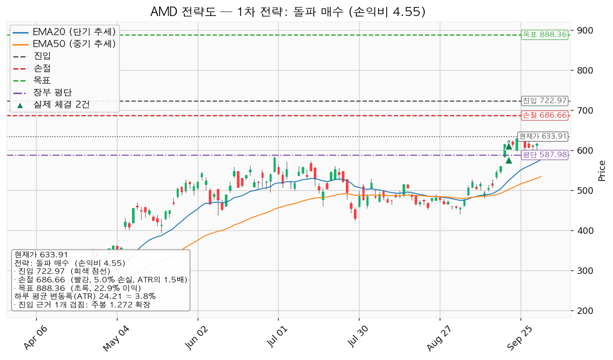
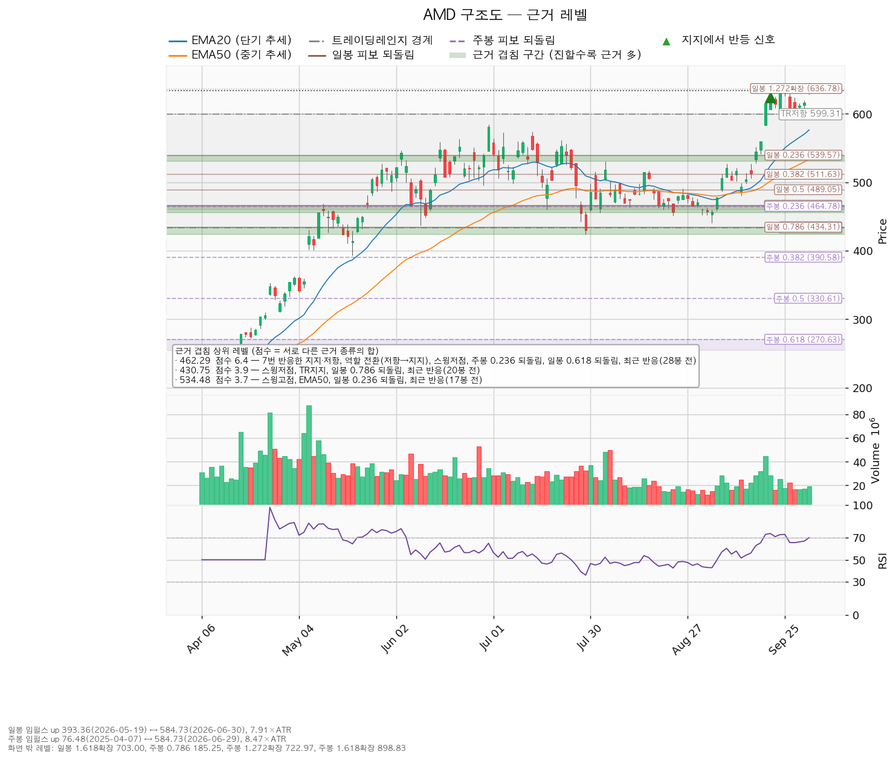
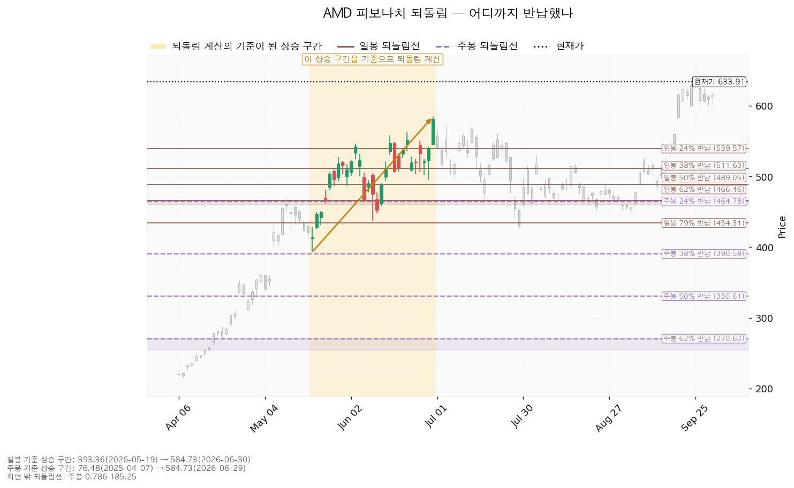
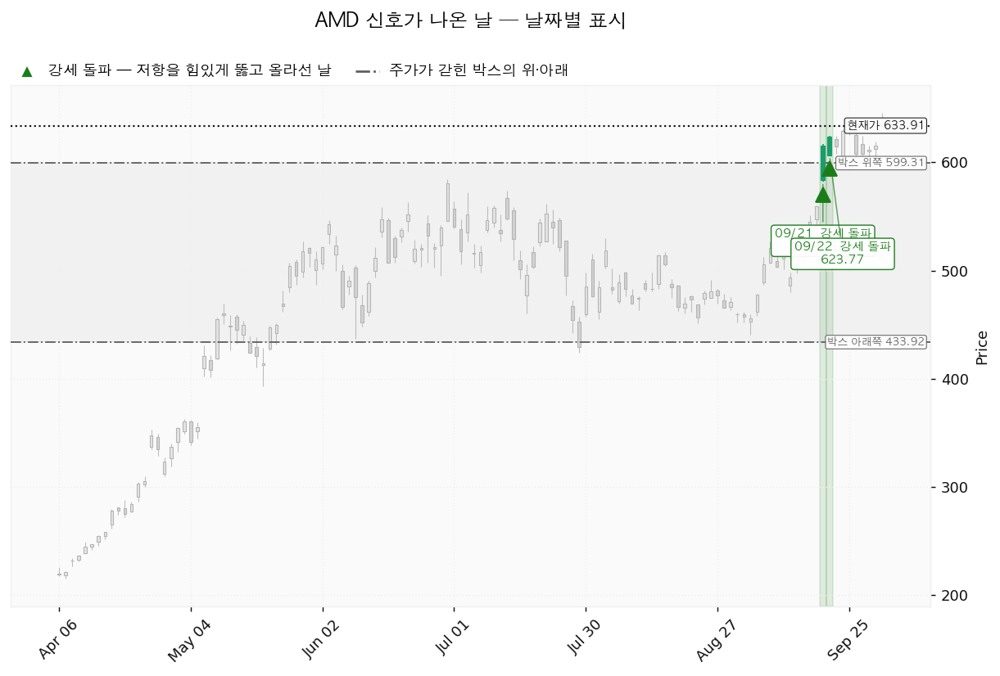

AMD(Advanced Micro Devices)는 PC·서버용 CPU와 데이터센터 GPU, 게임기용 반도체를 설계하는 미국 기업입니다.
| 구분 | 가격 | 판정 방식 | 현재 상태 |
|---|---|---|---|
| 진입선 (되돌림 매수) | 600달러 (-5.40%, 1.42 ATR 아래) | 저가 터치 지정가 | 미충족 |
| 집행 손절 | 568달러 (-10.37%, 2.72 ATR 아래) | 저가 터치 | 보유 3주에 지금부터 유효, 600달러 매수분에도 유효 |
| 관망 종료 기준 | 574달러 (-9.42%) | 일봉 종가 이탈, 또는 2026-11-04 실적까지 600·723달러 어느 쪽에도 닿지 않음 | 유지 중. 닿으면 매수 계획 종료 — 새 리포트 대기 (보유분은 그대로) |
| 확인선 · 목표 | 723달러 (+14.05%, 3.68 ATR 위) | 고가 터치 → 전량 매도 (목표 도달) / 일봉 종가 돌파 → 상승 확정 | 미충족 |
| 폐기선 | 434달러 (-31.55%) | 이탈 후 3거래일 내 회복 실패 + 반등에서 저항 확인 | 유지 중. 하루 평균 변동폭의 8.26배 아래라 실무상 작동하지 않음 |
엔진이 낸 회복선 462달러(7번 반응한 지지·저항 + 저항→지지 전환)와 확인선 534달러(스윙고점 + EMA50 + 일봉 0.236 되돌림)는 둘 다 이미 넘긴 값이라 표에서 뺐습니다. 박스 상단 599달러는 진입선의 근거 중 하나로만 씁니다.
이 점검은 엔진 1순위인 돌파형 기준으로 채점됐습니다. 이 리포트의 되돌림 매수(눌림형) 기준인 5일 평균 거래량 0.7배 미만도 실측 0.81배라 미달이고, 손익비는 1:3.91로 통과입니다. 지수 대비 초과수익은 20일 +39.29% · 60일 +13.57% · 120일 +144.67%, 가중(20일 0.45 · 60일 0.30 · 120일 0.25) +57.92%입니다.
| 항목 | 내용 |
|---|---|
| 셋업 | 되돌림 매수 · 선취형(구조 미확인, 가중치 0.7) — 진입가는 유리하나 실패 확률이 높음 |
| 진입 | 600달러 저가 터치. 장부 평단 587.98달러 위라 평단을 올리는 추가 매수(22주 평단 598.06달러) |
| 진입 근거 | 세 근거 겹침 — 박스 상단 + 라운드피겨 600 + 4봉 전 반응 (599~600달러) |
| 손절 | 568달러 — 574~580달러 겹침 구간(스윙고점 + EMA20 + 라운드피겨 580) 안이 아니라 그 아래에 두어 손익비가 그만큼 낮아짐 |
| 목표 | 723달러 (주봉 1.272 확장) 단일 전량 매도, 트레일링 없음 |
| 손익비 | 1:3.91 (손절 1.30 ATR). 구조적 손절 기준 손익비는 따로 산출되지 않았으나 손절이 이미 구조 아래라 같은 값 |
| 엣지 | 평균회귀 — 지지로 눌릴 때 산다. 승률이 높고 이익 폭이 작은 유형(일반적 성격이며 측정값 아님). 723달러 전량 매도와 정합 |
| 비중 | 19주 추가 · 15,295,686원 (계좌의 10.96%), 합계 22주 12.79% |
엔진은 723달러 종가 돌파 매수(돌파 확인형, 1:4.55, 손절 687달러, 진입 근거는 주봉 1.272 확장 하나뿐인 단일 레벨)를 1순위로 냈지만 이 리포트는 쓰지 않습니다. 그 진입가가 되돌림 계획의 목표와 같은 가격이라 집행 정책상 723달러 위는 상승 확정 뒤 새 리포트가 잡을 구간이고, 손절 687달러가 현재가 위라 보유 3주에 걸 수 없으며, 목표 888달러는 저항 근거 없이 박스 높이(165달러)를 723달러 위에 더한 값입니다. 되돌림 매수는 600달러에서 받친다는 확인 없이 먼저 들어가는 대신 진입가가 낮습니다. 상대강도·거래량 배수(되돌림 1.15배, 돌파 1.10배)는 순서를 바꾸지 않았습니다. 진입~목표가 5.09 ATR이지만 분할하면 전 구간 손익비가 1:3.91에서 1:2.28(본전 스탑 하한 1:0.33)로 내려가 단일 매도로 둡니다. 보유 3주(+7.81% · +184,993원)는 568달러에서 매도하면 -79,857원, 723달러에서 매도하면 +543,685원입니다.

| 단계 | 트리거 | 의미 | 행동 |
|---|---|---|---|
| 1 관찰 | 진입 뒤 일봉 종가가 600달러 아래로 마감 | 되돌아 올라오면 속임수 하락일 수 있어 아직 무효가 아님 | 추가 매수 중단, 집행 손절 유지 |
| 2 경고 | 이탈 후 3거래일 안에 600달러를 종가로 회복하지 못함, 또는 그 전에 일봉 종가가 575달러 아래로 마감 (하루 평균 변동폭의 1배만큼 더 밀림) — 둘 중 먼저 오는 쪽 | 되돌림 지지 상실 가능성이 우세 | 반등 시 600달러 반응 확인 |
| 3 무효 | 반등이 600달러에서 막히고 그 아래로 되밀림 | 구조 해석이 틀린 것으로 확정 | 보유 22주 전량 매도 (시나리오 폐기) |
집행 손절 568달러는 단계와 무관하게 저가가 닿으면 작동합니다. 폐기선 434달러는 가격 기준으로 쓸 수 없으므로, 논지 무효화는 2026-11-04 실적에서 내년 EPS 컨센서스 15.58달러가 하향으로 돌아서거나 영업현금흐름이 전년 77.09억달러 아래로 꺾이는 경우로 겁니다.
상승 전환 — 600달러 되돌림에서 매수, 723달러 전량 매도. 되돌림 없이 723달러로 가면 보유 3주만 723달러에서 전량 매도되고 매수는 집행되지 않으며, 723달러 종가 돌파는 새 리포트로 다시 잡습니다.
횡보 지속 — 574달러 위, 723달러 아래에서 매물을 소화하는 국면이며 부정적 신호가 아닙니다. 추적 항목은 지지 테스트 거래량(1.20 → 1.17 → 0.89 → 0.64 → 0.83배, 감소), 저점 절하가 절상으로 돌아서는지, 상승봉 대 하락봉 거래량비 1.11입니다.
시나리오 폐기 — 434달러 이탈 후 3거래일 내 종가 회복 실패(또는 그 전에 410달러 아래 종가 마감)와 반등이 434달러에서 막히는 것을 확인하면 재분산으로 보고 관망합니다.
| 가격 | 겹친 근거 | 최근 반응 |
|---|---|---|
| 723달러 | 주봉 1.272 확장 | — |
| 637~640달러 | 일봉 1.272 확장 + 라운드피겨 640 | 5봉 전 |
| 599~600달러 | 박스 상단 + 라운드피겨 600 | 4봉 전 |
| 574~580달러 | 스윙고점 + EMA20 + 라운드피겨 580 | — |
| 530~540달러 | 스윙고점 + EMA50 + 일봉 0.236 되돌림 | 17봉 전 |
| 456~466달러 | 7번 반응한 지지·저항 둘 + 역할 전환(저항→지지) + 스윙저점 둘 + 주봉 0.236 + 일봉 0.618 되돌림 | 28봉 전 |
| 424~434달러 | 박스 하단 + 스윙저점 + 일봉 0.786 되돌림 | 20봉 전 |
박스는 753개 일봉 중 최근 90봉으로 판정했습니다(안에 머문 비율 0.878, 방향 쏠림 0.087; 40봉은 쏠림 1.16, 180봉은 0.734로 박스가 아님). 직전 구간 189~363달러를 위로 돌파해 올라온 박스이고, 안쪽 판정은 중립입니다 — 지지 테스트마다 매도 거래량은 줄었지만 저점이 절하됐고 상승봉 거래량이 하락봉의 1.11배입니다. 현재가는 박스 상단 599달러 위에 있습니다.

일봉 되돌림은 393.36달러(05-19) → 584.73달러(06-30), 주봉은 76.48달러(2025-04-07) → 584.73달러 기준이며 직전과 같습니다. 위쪽 확장은 일봉 1.272 637달러·1.618 703달러, 주봉 1.272 723달러·1.618 899달러입니다.

날짜 신호는 상승 신호(SOS) 둘(09-21 615.52달러, 09-22 623.77달러)로 직전과 같고 새 신호는 없습니다. 국면 후보는 상승 진행입니다.

후행 PER 160.89배, 선행 40.68배로 벌어진 것은 EPS가 올해 +81.7%, 내년 +105.67%(15.58달러) 늘어나는 구간이기 때문입니다. 목표주가는 50명 평균 619.51달러, 최저 365.00달러, 최고 1,250.00달러이며 현재가는 평균보다 위, 최저보다 위입니다. 가격은 52주 고점 대비 -1.79%로 하락의 성격을 가를 구간이 아니고, 내년 EPS 추정치는 90일 +18.3% · 30일 +1.7%로 상향이 진행 중입니다(올해분 90일 +2.6% · 30일 +0.1%). 현금흐름은 흑자입니다(2025-12-31 결산, 영업 +77.09억달러, 잉여 +67.35억달러, 설비투자 9.74억달러로 +53.1%). 평균 목표의 내재 배수는 내년 EPS 기준 39.75배로 현재 40.68배보다 낮고, 목표 723달러는 46.39배가 필요해 상승분의 일부를 배수 확장에 기댑니다. 컨센서스는 12개월, 이 셋업은 수 주 시계입니다.
2026-11-04 3분기 실적 — 내년 EPS 15.58달러 상향 지속 여부, 영업현금흐름이 전년 77.09억달러 수준을 지키는지. 그때까지 600달러 되돌림도 723달러 도달도 없으면 이 매수 계획은 끝납니다. 다음 실적 이후 구간은 확인할 자료가 없습니다.
1% 리스크 기준 산출 비중은 계좌의 19.0%라 13% 상한(18,134,792원)을 적용해 합계 22주(17,848,778원, 12.79%, 환율 1,342.51원, 계좌 평가액은 2026-09-21 등록값)로 맞춥니다. 신규분 리스크는 계좌의 0.58%(803,492원), 보유 3주를 현재가에서 568달러까지 더하면 AMD 전체 0.77%(1,068,343원)입니다. 매수 후 반도체 테마는 1.83% → 12.79%, 전체 미결제 리스크는 1.43% → 2.10%로 한도 안입니다. 하루 평균 변동폭은 주가의 3.82%로 8% 기준 아래이고 손절 폭 1.3 ATR은 하루 변동폭 밖에 있습니다. 최종 판정: 600달러 되돌림 시 19주 매수, 568달러 손절, 723달러 전량 매도, 손익비 1:3.91. 조건 점검 8/9, 미달은 거래량 강도입니다.
용어: ATR = 하루 평균 변동폭(24.21달러). EMA = 지수이동평균. RSI = 상대강도지수(현재 70.1). SOS = 거래량이 실린 상승 신호. EPS = 주당순이익. PER = 주가수익비율.